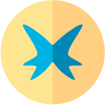
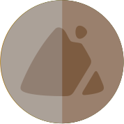

grass

water

fire

poison

flying

bug

normal

dark

dragon
electric

fairy
fighting

ghost

ground

ice
psychic

rock

steel
N. 361

snorunt
- ice

N. 362

glalie
- ice
N. 363

spheal
- ice
- water

N. 364

sealeo
- ice
- water
N. 365

walrein
- ice
- water
N. 366

clamperl
- water
N. 367

huntail
- water
N. 368

gorebyss
- water
N. 369

relicanth
- water
- rock

N. 370

luvdisc
- water
N. 371

bagon
- dragon

N. 372

shelgon
- dragon
N. 373

salamence
- dragon
- flying

N. 374

beldum
- steel

- psychic

N. 375

metang
- steel
- psychic
N. 376

metagross
- steel
- psychic
N. 377

regirock
- rock
N. 378

regice
- ice
N. 379

registeel
- steel
N. 380

latias
- dragon
- psychic

19